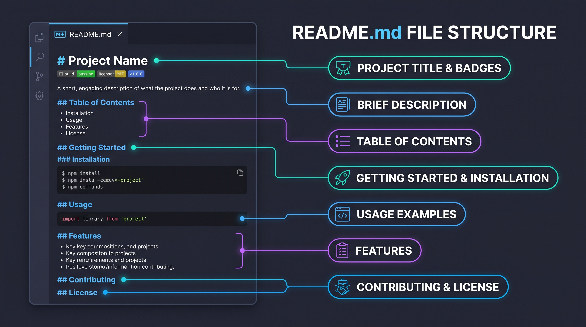
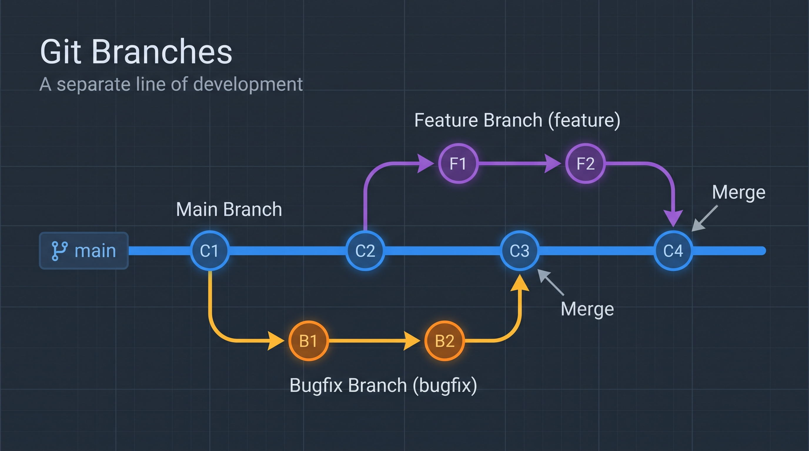

What is the purpose of a README file?
A README file provides essential information about a project, explaining what it does, how to install it, and how to use it
Read more about README filesAn introduction to README files, wireframes, and Git branches.

A README file provides essential information about a project, explaining what it does, how to install it, and how to use it
Read more about README files
A wireframe is a visual guide that represents the skeletal framework of a website or application. It shows the layout, structure, and content placement without the final design elements.
Read more about wireframes
A branch in Git is a separate line of development that allows you to work on different versions of a project simultaneously.
Read more about Git branches